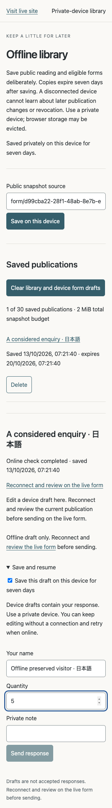
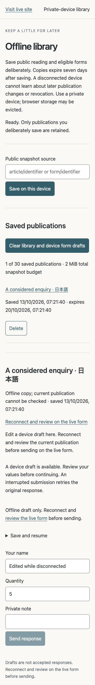
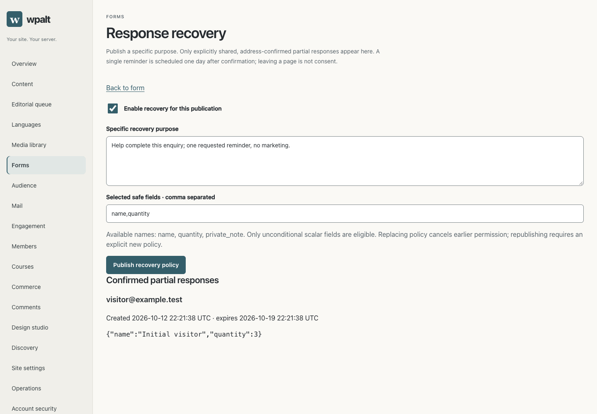
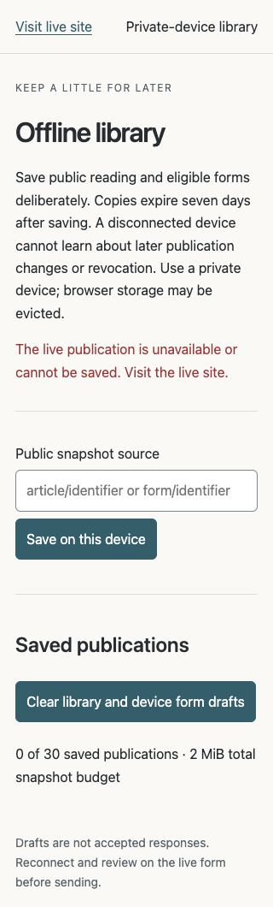

2026-10-17 checkpoint · Local evidence captured 2026-10-13 · Implementation CI passed; merge/public release pending
Deliberate offline reading.
Recovery by explicit permission.
Save public text and eligible scalar forms on a private device. Reopen and edit offline, then reconnect and deliberately review. Owner-visible partial answers require a published purpose, selected safe fields and separate address confirmation.
PR28 · Verification ledger
Verified locally
148 cumulative Rust scenarios with required SQLite/PostgreSQL; final targeted security regressions and Clippy pass. Real Chrome 155 runs through two app processes and one ready worker (120/119 requests), with 12 measured layouts and 4 scoped accessibility audits. Lock contention, real offline reopen, original retry, revocation, expiry,30-item admission and changed-asset refusal pass.
Public snapshots: 512 KiB each, 30 items, 2 MiB total, 7 days. One three-field snapshot: 1,475 bytes; 30 serial local debug requests: median 3.567 ms, p95 11.911 ms. These are fixture observations, not performance/support guarantees. No paid-plugin or universal offline synchronization claim.
Actual populated and failure screens

d12-saved-library-320.png
d12-offline-reopened-320.png
d12-confirmed-partial-1440.png
d12-live-denial.png